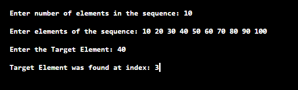
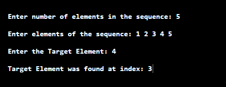

Searching Algorithms
-
Why do we need searching algorithms?
Well, almost every question you solve in the world of Algorithms we use an array for storing similar types of data in it, and at any point in time, we require to check if some data if present in the given array or not this is where searching algorithms come into the picture.
And believe me, if you want to solve problems at a faster rate than you should get your hands dirty on searching algorithms.
Don’t worry we will make it crystal clear for you 😊 just be relaxed and
keep reading.
We will discuss two searching algorithms in this article:
1. Linear Search – O(n) Time Complexity
2. Binary Search – O(logn) Time Complexity
1. Linear Search – O(n) Time Complexity
When it comes on searching an element in a sequence then the first approach
that pops up in our mind is comparing each element with the target element. This is
what the logic of linear search is all about in which we traverse the whole
sequence unless we find that element.
let’s take an example to understand it more clearly,
E.g. You are given an array: A = [ 1, 2, 3, 4, 5, 6] and you want to search for 4 in this array.
So, now you would have guessed what we will be doing in a linear search.
Yes, you guessed it right we will be iterating from 1st element of given
array till the last element and in every iteration, we will be checking if
the current element is equal to the number we want to search
If it is equal we will break the loop since we have found our value else we
will continue iterating over given array.
So, now we hope you are very much clear with the logic behind linear search
and now its perfect time to have a look at code.
Below is the implementation of linear search in C++:
Time Complexity: O(n)
Output

2. Binary Search – O(logn) Time Complexity
- Since linear search has a time complexity of O(N), in many cases it is considered to be inefficient. As binary search searches the element with a worst case time complexity of O(log N), it is generally preferred over linear search.
- Binary search algorithm works on a sequence which is sorted either in ascending order or in descending order
· The basic approach of this algorithm is to divide the sequence in two halves and ignore the half in which the target element is not supposed to be present depending on its comparison with middle element of the sequence.
· If the target element is less than middle element then it will occur on an index less than that of middle element.
· If the target element is greater than middle element then it will occur on an index greater than that of middle element.
· Now the above process is repeated for the half part of the sequence in which the target element is supposed to lie by dividing it in two smaller halves.
· This process is repeated till we get a subsequence with a single element.
. If this element is equal to the target element then print “Element is found”, else, print “Element not found”.
The implementation of Binary search is as follows:
Overall Time Complexity: O(nlogn)
Time Complexity for searching element in array: O(logn)
Output

Below is a short animation to compare linear search with
binary search:

Note:
you may observe here that the overall time complexity of the binary search
is more than linear search, but when it comes to searching an element in an
array binary search gives much faster results.
It is always better to solve a question after you learn a new concept as it
helps in making concrete concepts
So, below are problems which are handpicked by Programmers Army to make your concept more solid which you learned.
1. Problem from CodeChef:
https://www.codechef.com/problems
/TRICOIN
2. Problem from hackerearth: https://www.hackerearth.com/practice /algorithms/searching/binary-search/practice-problems /algorithm/student-arrangement-6/
We highly recommend to solve above problems if you got stuck read
editorials for guidance.
So that’s it for this article we will be coming up with our next article on further topics very soon till then keep learning, keep coding, keep reading and keep improving !!
Happy Coding 😊
By Programmers Army